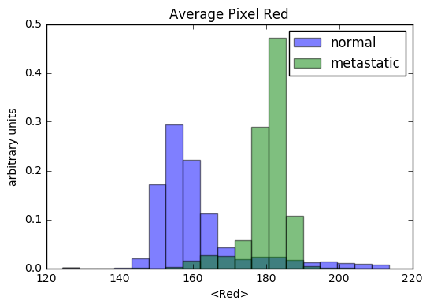

IsThisMetastasis.info
Is this metastasis?


If you're not a pathologist, you have a 50/50 chance of correctly identifying which of the two images above
contains metastatic tissue -- the same probability
that an untrained computer could correctly classify the two types of tissue.
The image on the left is healthy tissue, and the other is metastatic tissue.
How would you classify this other image to the right? It has a similar color and structure to the tissue
that you learned was healthy, so you'd probably guess (correctly) that this image also contains healthy
tissue. Is it possible to train a computer to identify these features, and
why is this important?
Histology is repetitive
Histology is the study of the microscopic structure of tissue. It is often used to accurately diagnose cancer and other diseases, and is an essential tool for researchers evaluating new potential cures for these diseases. There are many steps involved in preparing a histological slide before it can be examined by a histopathologist -- fixing, processing, embedding, sectioning, and staining.The automation of these steps has already been solved by a company called HistoWiz that offers automated histology for biomedical researchers, where tissue samples can be processed in as little as 3-days. HistoWiz returns a DZI (Deep Zoom Image) file to these researchers, allowing them to zoom in up to 40x and resolve tissue features on the micron level.
It can take a considerable amount of time for researchers to pour over these images and identify regions of interest. A computer trained to identify these regions would save researchers substantial time and effort, enabling them to accelerate their groundbreaking research. Companies that offer this service would be the go-to for these researchers, so investment in these techniques is a worthwhile pursuit.
How do we train a computer
There are two steps involved in training a computer to classify images. First, we need to use algorithms to identify key features within the images that are able to discriminate between our different categories. The algorithms that quantify the structure and color of an image fall into the category of computer vision.Once we've decided on a set a features which we think may have discriminating power between different categories of images, we can use these features as inputs to a classifier. There are many different classifiers to choose from, but they generally fall into one of two categories : supervised learning and unsupervised learning. If we have a set of images that has already been labeled, and we want to train a computer to recoginize future images that belong under that label, a supervised learning algorithm would be the best choice. If instead, we want to find unique groups within an unlabeled set of data, an unsupervised classifier would be the way to go.
One last note -- there is a powerful technique called deep learning. Given a large enough dataset, the feature identification and image classification can be learned by a single machine learning algorithm. These algorithms require enormously large training datasets to achieve accurate classifications, but once trained, they can be efficiently repurposed for different applications using a technique called transfer learning.
The data
The data I am working with are composed of 6732 individual tissue slide frame images, equally split between tissue classified as normal and tissue classified as metastatic. Each frame measure 224x224 pixels, and I used a 60/20/20 split to divide that data between my train, cross-validation, and test sets. Some fraction of the images contain very little tissue (i.e. greater than 95% of the slide is white background). I excluded these slides from my training, cross-validation, and test sets, leaving 6611 total slides to work with. 3962 of these are use for training, 1325 are used for cross-validation, and the remaining 1324 are reserved for testing. After visually inspecting both the normal and the metastatic tissue images in my training set, I engineered the following computer vision features: blob density, tissue discontinuity, and color compactness.Blob density
As a particle physicist by training, I noticed that the healthy tissue contains a greater density of "blobs" than the metastatic tissue (I have since learned that these blobs are healthy cell nuclei). I employed a blob finding algorithm using openCV, which searches each image for groups of connected pixels that share a common property. The parameters of these algorithms can be tuned to search for blobs of different shapes and sizes. In the image on the right, the yellow circles indicate where a blob has been found. Because I set up my blob finder to find circular blobs, it misses overlapping nuclei that appear as a single, elongated blob (e.g. look at the right-middle of the image).Color compactness
Color compactness is a measure of the color variability in an image. A k-means clustering algorithm is used to cluster the pixels in an image into a specified number of classes (k), such that the sum of the distances (in color space) of each pixel from its assigned cluster center is minimized. This sum (with an addition normalization) is used as the color compactness metric. In other words, color compactness is measure of how well an image can be represented using k colors. The color compactness measure for this project uses k=3. This is motivated by the H&E stain used in these slides, which generally produces dichromatic images (k=3 is used because there is often some white space in an image). The image on the right shows the color compacted image of a slide containing metastatic tissue.Tissue discontinuity
 Tissue discontinuity is a measure of the connectedness of tissue in a given slide. Tissue that is very connected will have
a low tissue discontinuity score, and vice-versa for disconnected tissue. This feature is computed by converting the image to
a black-white representation of itself, and then using an edge detection algorithm to find the boundaries between black and white.
Tissue that is not very connected tends to have many small patches of white space, and therefore more edges per unit area of white
space (than connected tissue). In the image on the right, the small colored circles show where the algorithm has detected an edge.
Tissue discontinuity is a measure of the connectedness of tissue in a given slide. Tissue that is very connected will have
a low tissue discontinuity score, and vice-versa for disconnected tissue. This feature is computed by converting the image to
a black-white representation of itself, and then using an edge detection algorithm to find the boundaries between black and white.
Tissue that is not very connected tends to have many small patches of white space, and therefore more edges per unit area of white
space (than connected tissue). In the image on the right, the small colored circles show where the algorithm has detected an edge.
Absolute color
It can be easy to get excited about computer vision techniques and ignore more basic features that have discrimination power between different types of tissue. The individual R,G,B pixel intensities, averaged over the images as a whole, are very powerful in discriminating between normal and metastatic tissue.Feature distributions
The plots below show the distributions of these features for the normal and metastatic tissue in the training set. The distributions are normalized to unit area, so for each bin on the horizontal axis, the vertical axis represents the fraction of training set data in that particular bin.
